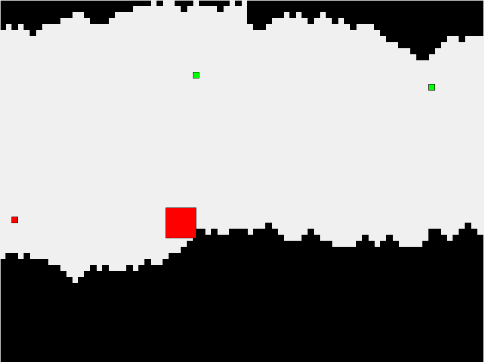

Mechanical Sidescroller
Software
Computer Vision
One of our objectives was to be able to interpret maps dynamically. That way, rather than having to program in one hard-coded map, the user can just draw a map themselves.
To this end, we decided to use a webcam and SimpleCV (a Python wrapper around the OpenCV library for C) to detect the contours drawn on the roll of paper.
Calibration
Our software has two modes: calibration and detection. In calibration, it looks for 4 pink squares and uses those as the bounding box for the map (so that during detection, the image size is as small as possible to facilitate speed and eliminate noise). SimpleCV's findBlobs() and isSquare methods() worked well for this step.
Raw image
Squares found (marked in green)

Calibrating the working area (shaded grey)
Detection
During detection, the software uses Canny threshold detection (via SimpleCV's edges() method)to find the edges in the image, and produces a matrix of points based on the result. These points define boundaries that the character cannot travel through, and are passed on to the game engine, so that it can determine if the character has lost or not.
Cropped image
Edges detected
The hardest part about this step was figuring out good lower and upper bounds for the Canny algorithm - too far one way and we got too much noise, but too far the other way and the software didn't pick up our lines. The numbers that we're using right now are th1=20 and th2=40 for the lower and upper bounds. As you can see above, these work quite well.
Game Engine
The game engine subsystem is written in Python using the the TKInter graphics library. We chose to use Python and TKInter to facilitate rapid iteration and incremental development. The game engine defines the environment for the game and facilitates user input.
To make sure we had a demoable prototype and to facilitate testing, the game engine was designed to facilitate both software and mechanical implementations. For each major component, there exists an abstract class defining methods relevant for both implementations, and both a mechanical and software child class. Mechanical and software game-player take these objects to manage the system.
The software mock-up of the game is completely functional and incorporates all major components we sought to included in the game design-- collision detection, increased speed over time, power-ups and anti-power-ups. The mechanical implementation of the game engine is also complete; however, due to time constraints and trouble with integration, it has not been largely implemented in our final mechanical product.
Process reflection and advice
I built the game engine system incrementally. I started by development general code that could be applied to both the hardware and software systems. This code included methods defining the basic classes for the world, snail, and power-ups and provided methods to instanciate them. Next, I built the software mock-up of our physical game. In addition to building on the generic game methods, this code also provided methods to generate a world and continue to build on it dynamically throughout the course of the game. These components are not necessary in the mechanical implementation, in which the world is provided. After building the software implementation, I made the mechanical implementation. The mechanical implementation contained methods and interfaces to integrate with the vision and Raspberry Pi systems. Unfortunately, this system was not fully integrated with the game engine due to time constraints.
Were I to reimagine my design process, I would have tried to integrate the game engine with other components earlier. For example, I would have integrated the vision component with the software mock-up rather than waiting until the mechanical system was ready.
